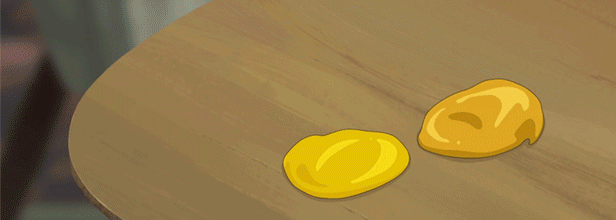

Behind the Frame
Porting Engineer & Production Assistant
Behind the Frame: The Finest Scenery was developed by Silver Lining Studio and was ported and published by Akupara Games to iOS, Android, PC/Steam, PS4 and Nintendo Switch platforms.
As a Junior Programmer at Akupara Games, I worked remotely alongside the Taiwan-based development team and my production team headquartered in Los Angelos, CA. As the primary devloper on this project, I was responsible for porting the original mobile touch-screen controls to be compatible with PC & Nintendo Switch. I also assisted production tasks such as capturing content for store pages and tracking the project's development milestones
